Kitsuki
Kitsuki · Oita
Kitsuki
Highlighted on the Oita map.
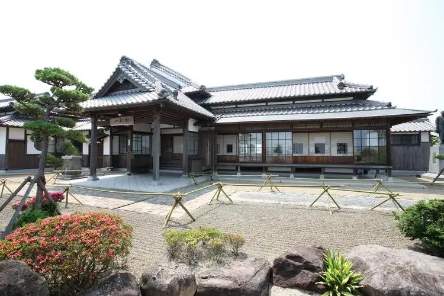
Dining
杵築 翁達磨
Kitsuki Okina Daruma
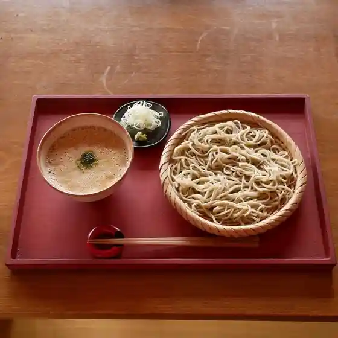
キツキテラス
Kitsukiterasu
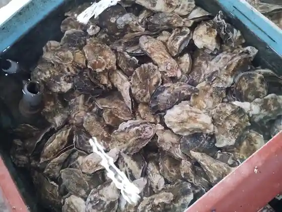
魚市魚座
Uoichi Uoza
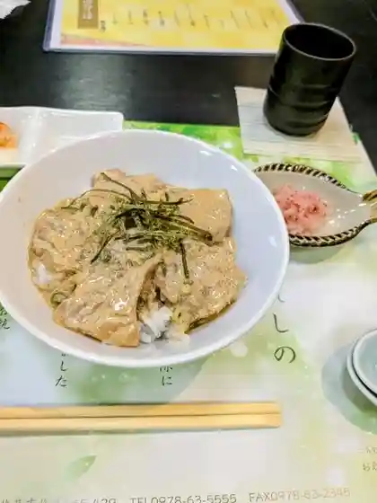
若栄屋
Jaku Sakae Ya
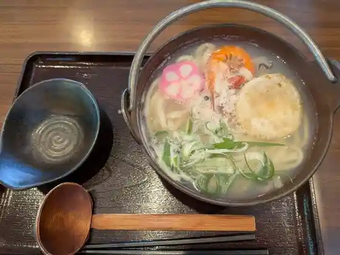
元禄うどん
Genroku Udon
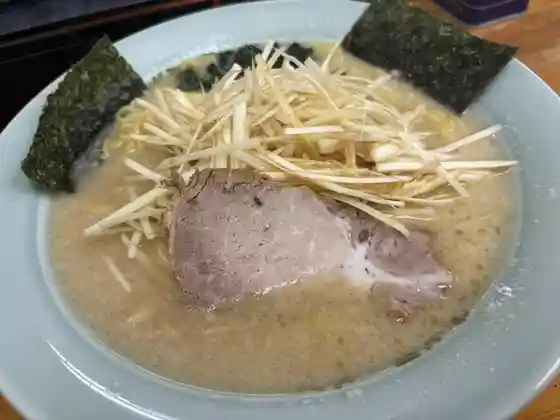
ラーメンショップ 山香店
Raamenshoppu Yamaga Mise
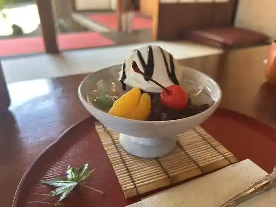
台の茶屋
Dai No Chaya
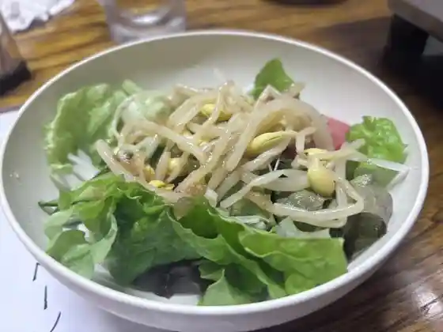
食道園 本店
Shokudo Sono Honten
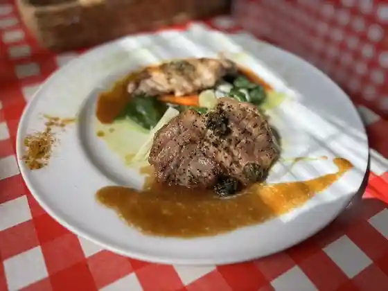
洋食屋 おわたり
Youshoku Ya Owatari
ます田や
Masu Ta Ya
M.MIURA
M.MIURA
松山堂
Matsuyama Dou
カフェ食堂 あおぞら
Kafe Shokudo Aozora
森の音色
Mori No Neiro
9▷▷10
9▷▷10
別府ゴルフ倶楽部
Beppu Gorufu Kurabu
Oyster Restaurant 海の時間
Oyster Restaurant
紙ふうせん
Kamifuusen
中国食事処 点心嬉楽
Chuugoku Shokuji Tokoro Tenshin Kiraku
みのり和遊食彩
Minori Wa Yuu Shokusai
お食べ家 円
O Tabe Ie En
杵築ラーメン 清新亭本店
Kitsuki Raamen Seishin Tei Honten
暘谷亭
You Tani Tei
うどん山ちゃん
Udon Yama Chan
ネパリバンサ
Neparibansa
花実
Kajitsu
一番館
Ichiban Kan
ことら
Kotora
肉まる
Niku Maru
末廣丸
Suehiro Maru
そんごくう
Songokuu
オルオル
Oruoru
中華麺食堂 縁
Chuukamen Shokudo Heri
萬彩食堂
Man Sai Shokudo
+met.
met.
焼肉 みやべ
Yakiniku Miyabe
住吉浜リゾートパーク
Sumiyoshi Hama Rizootopaaku
食楽酒房 遊 ゆとり
Shoku Rakushu Bou Yuu Yutori
福ちゃん唐揚げ 杵築本店
Fuku Chan Karaage Kitsuki Honten
お茶のとまや
O Cha Notomaya
綾部味噌
Ayabe Miso
おうちごはん おしゃれ小屋
Ouchigohan Oshare Koya
石山食堂
Ishiyama Shokudo
豊の国物産館カフェ
Yutaka No Kuni Bussan Kan Kafe
猫丸堂ベーカリー
Neko Maru Dou Beekarii
こけこっ幸
Kokekotsu Sachi
旬食喜心 芳の芽
Jun Shoku Kishin Hou No Me
きいろいビートcoffee
coffee
と々喜
To (kurikaesi) Ki
万来
Banrai
きつき漁菜館
Kitsuki Ryou Saikan
地鶏めし 大分杵築店
Jidori Meshi Ooita Kitsuki Mise
本町備後屋
Honchou Bingo Ya
フランス菓子 パピヨン
Furansu Kashi Papiyon
ファミリーマート 住吉浜店
Famiriimaato Sumiyoshi Hama Mise
食道園 支店
Shokudo Sono Shiten
中野酒造
Nakano Shuzou
近藤養蜂場
Kondou Youhou Ba
日向屋
Hyuuga Ya
牡蠣の家
Kaki No Ie
菜の花
Na No Hana
のみめしや 勝
Nomimeshiya Kachi
中央クラブ
Chuuou Kurabu
キッチンせんす
Kitchin Sensu
インド料理レストラン アブタール 杵築店
Indo Ryouri Resutoran Abutaaru Kitsuki Mise
からあげやさん たろう
Karaageyasan Tarou
奥丹蔵
Oku Tan Kura
ウェルカム井上 杵築店
Uerukamu Inoue Kitsuki Mise
ジョイフル 大分杵築店
Joifuru Ooita Kitsuki Mise
きつき三川食堂
Kitsuki Mikawa Shokudo
モスバーガー 大分杵築店
Mosubaagaa Ooita Kitsuki Mise
大分からあげ 杵築店
Ooita Karaage Kitsuki Mise
まめのもんや
Mamenomonya
おべんとうのヒライ
Obentouno Hirai
ベアトリーチェ
Beatoriiche
峠 たていしの館
Touge Tateishino Kan
和食ダイニング 大
Washoku Dainingu Dai
まるいち
Maruichi
いち屋
Ichi Ya
オリヴァ・オレア
オリヴァ・オレア
さつき
Satsuki
風の一丘
Kaze No Ichi Oka
錦寿司
Nishiki Sushi
ふじやからあげ
Fujiyakaraage
やっちゃん
Yatchan
山香飯店
Yamaga Hanten
楼蘭喫茶
Rouran Kissa
和亭・からあげまあちゃん
和亭・からあげまあちゃん
焼肉白頭山
Yakiniku Shirogashira Yama
カフェすずめの楽校
Kafe Suzumeno Raku Kou
ふくしま八ちゃん堂
Fukushima Yachi Yan Dou
ディスカバー
Disukabaa
ほっともっと 大分杵築店
Hottomotto Ooita Kitsuki Mise
みろく酒造株式会社
Miroku Shuzou Kabushikigaisha
木付や
Ki Tsuki Ya
豊の国物産館カフェ
Yutaka No Kuni Bussan Kan Kafe
パティスリー・ジーク
パティスリー・ジーク
不二家 サンリブ杵築店
Fujiya Sanribu Kitsuki Mise
キオラコテージ
Kiorakoteeji
炭火キッチン・こよし
炭火キッチン・こよし
神田楽市
Kanda Rakuichi
からあげ たつ
Karaage Tatsu
近藤製パン
Kondou Seipan
Cafe m・歩っ
Cafe m
大分農業文化公園 ふれあい市場
Ooita Nougyou Bunka Kouen Fureai Shijou
柳家食堂
Yanagiya Shokudo
杵築ぎょうざ 小春 杵築本店
Kitsuki Gyouza Koharu Kitsuki Honten
ピエロのくろさん
Piero Nokurosan
Aコープ やまが店
A Koopu Yamaga Mise
京屋味かつ
Kyouya Aji Katsu
からあげ幸力 杵築店
Karaage Sachi Chikara Kitsuki Mise
サンリブ 杵築
Sanribu Kitsuki
お惣菜キッチン ぶるーむ
O Souzai Kitchin Buruumu
あしまえ
Ashimae
十花堂
Juu Hana Dou
からあげ 鳥すけ
Karaage Tori Suke
だいこんの花
Daikonno Hana
ここち屋
Kokochi Ya
チャイナキッチン 卓
Chainakitchin Suguru
猪鹿トリ 山香店
Inoshishi Shika Tori Yamaga Mise
plain jane
plain jane
四季彩 凛
Shiki Sai Rin
国際
Kokusai
居酒屋 直
Izakaya Choku
あざみ食堂
Azami Shokudo
はやし
Hayashi
お菓子の菊家 杵築店
O Kashi No Kiku Ie Kitsuki Mise
北浜びんごや
Kitahama Bingoya
後藤菓子舗
Gotou Kashi Ho
まろんすぺーす
Maronsupeesu
いな里
Ina Sato
ヨコハマ飯店
Yokohama Hanten
からあげひでちゃん
Karaagehidechan
小天狗
Shou Tengu
SHIRO屋
SHIRO
カフェ ショワウォーク
Kafe Showauooku
七輪焼 しんちゃん
Shichirin Yaki Shinchan
かぼちゃん弁当
Kabochan Bentou
Oshokuji Dokoro Furusato
Oshokuji Dokoro Furusato
Yoshokuyaowatari
Yoshokuyaowatari
Wakaeya
Wakaeya
Yamaka Onsen Kaze No Sato Restaurant Yamaga
Yamaka Onsen Kaze No Sato Restaurant Yamaga
Cafe Restaurant Aozora
Cafe Restaurant Aozora
Tateishiyama Drive In
Tateishiyama Drive In
Kaisen Tei Zakoba
Kaisen Tei Zakoba
Kifuku Shokudo
Kifuku Shokudo
Italian Bar Coco
Italian Bar Coco
Karintei
Karintei
Beatrice
Beatrice
Yumenobori
Yumenobori
Kineya Main Store
Kineya Main Store
Seiryuken
Seiryuken
Mos Burgeroita Kitsuki
Mos Burgeroita Kitsuki
Otsuo Saryo Tomato
Otsuo Saryo Tomato
Cafe Shore Walk
Cafe Shore Walk
Hyugaya
Hyugaya
Yakitori Kisoji
Yakitori Kisoji
Hikari Bento
Hikari Bento
Omotoya Shokujidokoro
Omotoya Shokujidokoro
Furyuna Zeitaku Izakaya
Furyuna Zeitaku Izakaya
Canadean Yamaga
Canadean Yamaga
Discover
Discover
Organic Kitchen Mukaunosato
Organic Kitchen Mukaunosato
Kawauchiya
Kawauchiya
Houjo Nakashima
Houjo Nakashima
Kamei So
Kamei So
Hojo
Hojo
Honmachi Higoya
Honmachi Higoya
Yakitori Sekisho
Yakitori Sekisho
Roran Cafe
Roran Cafe
Happy Kitchen
Happy Kitchen
Yokokutei
Yokokutei
Kisa
Kisa
Yutori
Yutori
Kyoya Ajikatsu
Kyoya Ajikatsu
Ramen Shop Yamaga
Ramen Shop Yamaga
Isakoma
Isakoma
Pottoin
Pottoin
Kotengu
Kotengu
Maryland Tamura
Maryland Tamura
Juou Kaikan
Juou Kaikan
Joyfull
Joyfull
Chinese Restauranttenshin Kiraku
Chinese Restauranttenshin Kiraku
Fried Chicken Hidechan
Fried Chicken Hidechan
Ariran Shokudo
Ariran Shokudo
Marusawa
Marusawa
Midori Shokudo
Midori Shokudo
Jokamachi Sakaba
Jokamachi Sakaba
Mike Room Humming
Mike Room Humming
Totoki
Totoki
Kimuraya Bread
Kimuraya Bread
Poppo Ojisan No Oita Karaage Kitsuki
Poppo Ojisan No Oita Karaage Kitsuki
Hori Fukueido
Hori Fukueido
Half Asleep
Half Asleep
Marie Francois Kitsuki
Marie Francois Kitsuki
Pierrot No Kurosan
Pierrot No Kurosan
Love
Love
Papillon Cake
Papillon Cake
Cafe Yurari
Cafe Yurari
Chuo Club
Chuo Club
Stay
ホテルいな里
Hotel Ina Sato
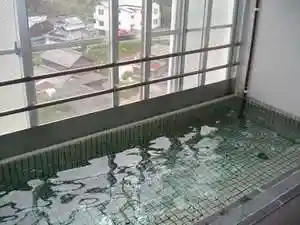
民宿あざみ
Minshuku Azami
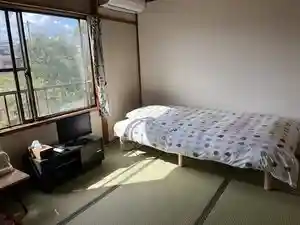
百年旅館 日向屋
Hyakunen Ryokan Hyuuga Ya
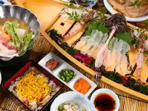
古民家宿りらいふ
Ko Minka Yadori Raifu
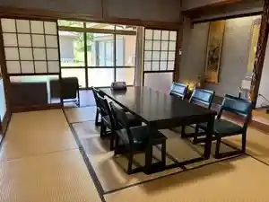
Sights
Sano Ie
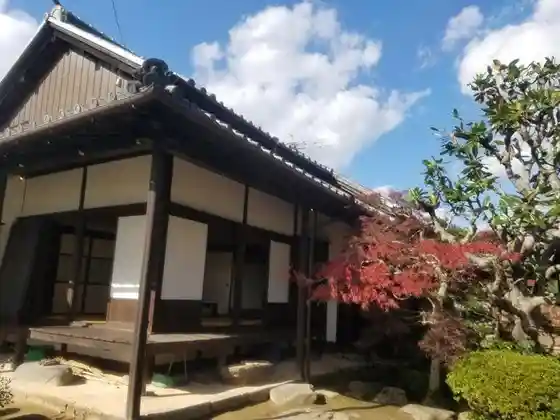
Ichimatsu (Hitotsumatsu) Tei (Kitsuki Castle Town Museum Nai)
Kitsuki Castle Town Museum
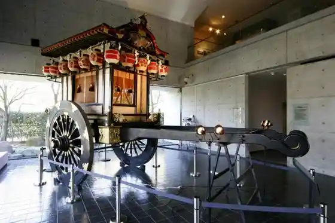
Shigemitsu (Shigemitsu) Ie
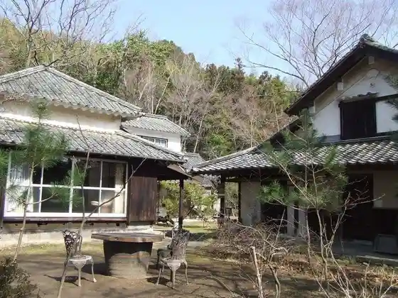
Isoya (Isoya) Tei
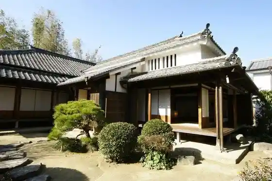
Ohara Tei (Oharatei)
Kitsuki Shiro (Kitsukijo)
Kabuto Oyama Park (Ko no Sankoen)
Nata (Nada) Coast
Ruru Park (Oita Nogyo Bunka Park)
Yamaga Onsen Kaze no Sato
Sumiyoshi Hama Resort Park
Sumiyoshi Hama Resort Park Hama Ichigo Sono
Nakano Shuzo
O Cha Tokoro Tomaya
Kitsuki Retoro Kan
Yokodake (Yokodake) Nature Park
KITSUKI TERRACE (Kitsukiterasu)
Rentaru Kimo no Wagaku Iori
Castle Town Kitsuki Sansaku
Hachiman Nata Miya
Nomi Tei (no Umitei)
Nakane Tei
Sato no Eki Yokodake Furusato Chaya (Yume no Bori)
Ikoi no Yu
Dai no Chaya
Honda Bara Kaori Sono
Kitsuki Yamaga Onsen Center
Sato no Eki Kitsuki Furusato Sangyo Kan
Hane Mon Falls (Udo no Taki)
Kiyomizudera no Reisui (Seisuiji no Reisui)
Ayabe Miso
Manriki Ya
Kitsuki Shu Rakukan
Kanjo Ba no Saka
Su Ya (Suya) no Saka
Jaku Sakae Ya
Shirahige Tahara (Shirahigetawara) Shrine
Hanko (Hanko) no Mon
Bansho (Bansho) no Saka
Yamaga (Yamaga) no Ishiburo
Shioya (Shioya) no Saka
Ameya (Ameya) no Saka
Mizu no Kuchi Yusui
Kitsuki Tourist Information
Kitsuki Yakusho